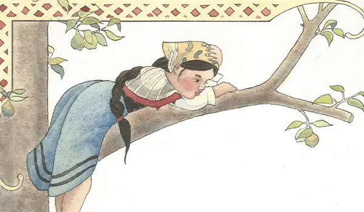
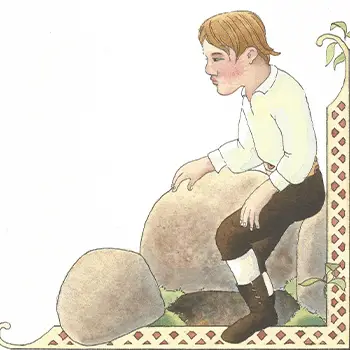
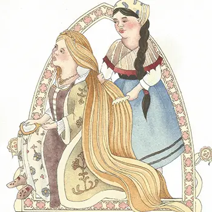
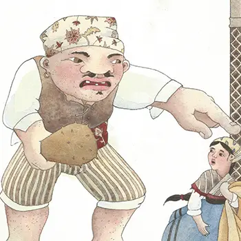
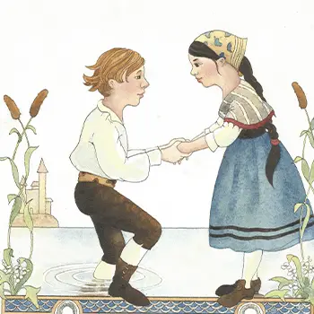

ONCE UPON A TIME, there was a girl so poor that she had to wander about the world looking for work. One day a farmer hired her to watch his cows. So each day she would take his cows to the meadow and bring them back at the end of the day. One morning in the meadow, the girl heard a loud groan that sounded almost human. She rushed to the spot. There, to her surprise, was a lion crying out in pain. Though she was scared the girl drew nearer, and saw that he had a large thorn in one foot. She carefully pulled out the thorn, bound up the wound with her handkerchief, and the lion licked her hand with his big rough tongue. Suddenly remembering her cows, the girl rushed back to the meadow. But alas! She hunted everywhere but could not find even one cow. What could she do but to return home and confess to her master? He scolded her bitterly and afterwards beat her. Then he said, "Tomorrow you will have to look after the pigs. Be sure you do not lose any of them!" Exactly one year after she had found the lion, the girl was tending the pigs one morning when she again heard a groan which sounded quite human. And there was the same lion on the ground, this time with a deep wound across his face. No longer afraid of the creature, she washed the wound, lay healing herbs upon it, and bound it up. The lion thanked her as he had done before. Worried, she rushed back. But again, the pigs in her flock were gone! She searched everywhere, but it was no use. She sank to the ground and wept bitterly, not daring to return again to her master empty-handed. At last she thought that if she climbed a tree she might get a wider view of the land and find her lost pigs. But no sooner was she seated on the highest branch than something happened which put the pigs quite out of her mind. Out of the woods walked a handsome young man who came to her tree. He moved aside a large rock by the tree trunk, stepped down into what looked like a deep black hole, and disappeared.
Now the maiden was so curious that she decided to stay in the tree all night long until the young man came out again. The next morning, the rock was moved aside, but out came not the young man, but a lion instead. The lion looked around, then very slowly padded into the forest and disappeared from view. Now the maiden was so curious that she climbed down the tree to see the rock for herself. It seemed like an ordinary enough rock. Yet she easily pushed it aside and discovered a deep opening underneath. She gingerly stepped down, found a toehold, and following a path was led to a beautiful house. In the house she discovered a library, and there she passed hours reading very good books, and left a favorite of hers out on the table. Then she prepared a good dinner (eating a bit of it herself, as she was very hungry!), and clambered back up to the top of her tree. She looked again for her lost pigs, but not a trace of one could she see. Ezoic As the sun set, the same lion, walking much better this time, came out of the woods and back to the rock under the tree. Down he went and a while later, out came the same young man. Again he looked about him left and right, saw no one, and softly stepped into the forest.
The maiden came down from the tree and did what she had done the day before, each time leaving a different book on the table and preparing a meal before she left. Thus three days went by. The next time the young man emerged, she called out, "Stop! Please, won't you tell me your name?" The young man, surprised, said, "Why, you must be the one who's been setting out the books and preparing my dinner!" He explained that he was a prince. Years ago, he had been captured by a giant who cast a spell on him. All day long he must be a lion. Only at night could he return to his human shape. As a lion, he had been the very one whom she had helped twice before. What's more, he whispered, the giant who had enchanted him was the very same one who had stolen her cows and her pigs, out of spite for the kindnesses she had shown to him, when he had been wounded as a lion. The girl asked, "How can you be freed from the spell?" Ezoic "There is only one way," he said with a sigh, "and that is if someone can get a lock of hair from the head of a king's daughter, spin it, and from its cloth weave a cloak for the giant." "Then I will go at once to the king's palace," said the girl. So they parted. When the girl arrived at the king's palace she was careful to wash herself and neatly arrange her hair. Quickly she was hired as a kitchen maid. Soon everyone at the palace talked about her neat and clean appearance. By and by the princess heard of her and sent for the girl. When she saw her, and how beautifully she had arranged her hair, the princess told her she was to come and comb out hers.
Now the hair of the princess was very thick and shone like gold. The girl combed it and combed till it was brighter than the sun. The princess was pleased and invited her to come every day and comb her hair. At last the girl took courage and asked permission to cut off one of the long, thick locks. The princess, who was very proud of her hair, did not like the idea of parting with any of it, so she said no. But each day the girl begged to be allowed to cut off just one lock of her thick hair. At last the princess gave in. "Very well then!" she finally exclaimed, "you may have it, on one condition -- that you find for me the finest prince in all the land to be my bridegroom!" The girl answered that she would do so, and she cut off the lock. When she was alone, she wove it into a cloak that glittered like silk. When she brought it to the young man, he told her to carry it straight to the giant, who lived on top of a high mountain. But he warned her that she must announce loudly that she was bringing the cloak, or the giant would surely attack her. Before the maiden reached the top of the mountain, out rushed the giant, waving in one hand a sword and a club in the other. Quickly she called out that she had brought him a cloak. At that, the giant stopped and invited her into his house.
He tried on the cloak but it was too short. Angry, he threw it onto the floor. The girl picked up the cloak and quickly left. She returned quite in despair to the king's palace. The next morning, when she was combing the princess' hair, she begged and begged for permission to cut off just one more lock. At last the princess gave in, on one condition - that the prince whom the girl should find for her to marry would also be the handsomest prince in the entire world. The maiden said softly that she had already found such a prince for her. Later, the girl spun more thread from the second lock. Now she could lengthen the giant's cloak and sleeves. When it was finished, she carried it again to the giant. This time the cloak fit perfectly! The giant was quite pleased, and he asked her what he could do for her in return. She said that the only reward he could give her was to take the spell off the prince so he could stay human, night and day. For a long time the giant would not hear of reversing his spell, but he liked the cloak so well that at last he said yes. He even told her the cows and pigs would be returned to her master by the end of the day. And this was the secret to freeing the prince of the enchantment - she must cast the lion into the pond near the mountain until he was entirely underwater. Then, when the prince finally emerged he would be free from the enchantment forever. The maiden went away in despair, for fear that the giant was trying to trick her, and that after she had cast the lion into the water she would find that she had only drowned the prince. At the bottom of the mountain, she joined the prince, who was waiting for her. When he heard her story he comforted her, and bade her to be of good courage, and to do as the giant had said. And so in the morning when he emerged in his lion's form, the maiden cast him into the pond near the mountain until he was entirely underwater. Soon after, out of the water came the prince, beautiful as the day, and as glad to look upon as the sun himself.
The young man thanked the maiden for all she had done for him, and declared that he would like her to be his wife and none other. But the maiden cried out that it could never be, for she had already given her promise to the princess when she had cut off her hair that the prince would wed her and her alone. Ezoic The prince sighed and said, "Then that is what must be." They went together to the king's palace, where the princess with the golden hair lived. When the king and queen saw the young man approach, a great joy filled their hearts. It was their eldest son! He had long ago been enchanted by a giant and had disappeared from the castle. Their daughter, the princess with the golden hair, was delighted to see her long-lost brother. The prince asked his parents' permission to marry the girl who had saved him. His sister happily released the maiden from her promise, as she surely would not marry her own brother! Before long she married another prince from a neighboring kingdom. And so the maiden and the prince were married, later became the rulers of the land, and over time they richly deserved all the honors showered upon them.